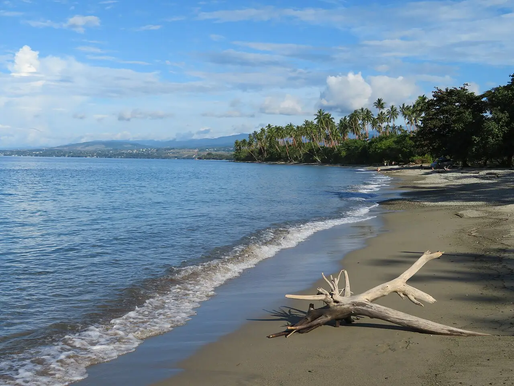

Bonegi
Guadalcanal, Îles Salomon · snorkeling, plongée

Plage de sable noir à l’ouest de Honiara, devant deux épaves de navires de transport japonais coulés pendant la bataille de Guadalcanal en 1942. On les explore depuis le bord : le haut d’une épave affleure, l’autre descend beaucoup plus profond.
- Lieu
- Guadalcanal, Îles Salomon
- Niveau
- Intermédiaire
- Activités
- snorkeling, plongée
- Type d'eau
- Mer / océan
- Coordonnées
- -9.38, 159.87 (position approximative du secteur)
Dangers à connaître
- Métal coupant et fond qui plonge vite : n’entre pas dans les épaves sans formation.
- Crocodiles marins présents aux Salomon : renseigne-toi localement avant d’entrer à l’eau.
- Plage sur terre coutumière : droit d’accès à prévoir.
Le conseil d'Ocean Buddy
Snorkele sur l’épave peu profonde ; pour la plus profonde, plonge avec un centre de Honiara.
Ouvrir dans Ocean Buddy Télécharger sur l'App Store
Source : Fiche Ocean Buddy · septembre 2026 · à vérifier localement.